리눅스마스터-1급 (2009-09-06 기출문제)
1과목: 리눅스 실무의 이해
1. 다음 중 시스템에 새로 적재되는 프로그램과 데이터를 주기억장치에 배치시키는 기억장소 배치 기법(Storage Placement Strategy)이 아닌 것은?
- 최초 적합(First Fit) 방법
- 최적 적합(Best Fit) 방법
- 최단 적합(Fast Fit) 방법
- 최악 적합(Worst Fit) 방법
(정답률: 59%)

2. 다음 중 GNU 프로젝트의 자유 소프트웨어에서 보장하는 자유에 대한 설명으로 가장 거리가 먼 것은?
- 프로그램을 복제(Copying)하고 공유할 수 있는 자유
- 소스 코드를 원용하여 이를 개작(Modification) 할 수 있는 자유
- 개작된 프로그램을 배포(Distribution)할 수 있는 자유
- 배포된 GNU 소프트웨어를 사용하여 직접 제작한 프로그램을 판매(Merchandising)할 수 있는 자유
(정답률: 81%)
3. 다음 중 실시간 운영체제(RTOS)가 아닌 것은?
- LynxOS
- ChorusOS
- VFAT
- VxWorks
(정답률: 66%)
4. 시스템프로그램 중 매크로 호출(Macro Call)을 매크로 정의(Macro Definition)로 바꾸어 주는 프로그램을 무엇이라 하는가?
- 컴파일러(Compiler)
- 로더(Loader)
- 어셈블러(Assembler)
- 매크로 프로세서(Macro Processor)
(정답률: 66%)
5. 다음 중 일반적으로 배포는 허용하지만 개작을 허용하지 않는 소프트웨어를 무엇이라 하는가?
- 셰어웨어
- 독점소프트웨어
- 프리웨어
- 상용소프트웨어
(정답률: 48%)
6. 하드웨어에서 중요 데이터를 보관하기 위해 여러대의 하드디스크가 있을 때 동일한 데이터를 다른 위치에 중복해서 저장하는 방법을 무엇이라고 하는가?
- RAID
- SCSI
- SATA
- DUAL RECORD
(정답률: 70%)
7. 운영체제에서 부트 매니저에 대한 설명으로 틀린 것은?
- 리눅스에는 LILO와 GRUB가 있다.
- 리눅스와 윈도우를 동시에 설치하여 사용하는 다중 부팅도 가능하다.
- 윈도우XP에서는 config.sys와 autoexec.bat가 역할을 담당한다.
- 부트 매니저를 대표하는 것은 OS/2의 부트 관리 프로그램이다.
(정답률: 44%)
8. 리눅스에서 사용되는 일반적인 디렉토리에 대한 설명 중 알맞은 것은?
- /sbin : rm, mount 등의 기본 명령어들이 모여 있는 디렉토리이다.
- /etc : 외부 장치들을 마운트하기 위해서 제공되는 디렉토리이다.
- /boot : 리눅스 커널이 저장되어 있는 디렉토리 이다.
- /usr : 시스템 계정 사용자들의 정보와 접속을 하는 사용자들을 위한 공간이다.
(정답률: 40%)
9. 대부분 리눅스 파일 시스템의 구조적 공통점이 아닌 것은?
- 파일의 이름을 제외한 해당 파일의 모든 정보를 가지는 아이노드(Inode)가 있다.
- 파일 시스템의 전체적인 정보를 가지는 슈퍼블록(Super Block)이 있다.
- 간접 블록 안에 데이터 블록의 주소로 특별한 값을 저장하는 홀(Hole)을 가진다.
- 파일이름과 아이노드 번호를 저장하기 위한 데이터블록(Data Block)이 있다.
(정답률: 35%)
10. 리눅스 파일 시스템에서 ext2의 특징으로 알맞지 않은 것은?
- fsck(file system check)라는 파일 시스템 복구 기능을 갖는다.
- ext2 파일시스템은 자신이 위치하고 있는 논리 적인 파티션을 블록으로 다시 나눈 것이다.
- 파일 시스템에서 무결성의 핵심을 이루는 정보를 중복해서 저장한다.
- 시스템의 안정성을 위해서 저널링 기술이 구현 되어 있다.
(정답률: 62%)
11. 다음 리눅스에서 사용 가능한 윈도매니저 중 넥스트스텝과 관련된 리눅스 윈도매니저가 아닌 것은?
- FVWM95
- Blackbox
- Fluxbox
- WindowMaker
(정답률: 23%)
12. 다음 쉘(Shell)에 대한 설명 중 틀린 것은?
- 각 운영체제와 사용자가 대화하는 중간 창구 역할을 한다.
- 표준 유닉스 명령 인터프리터로서 사용자가 입력한 명령을 해석한다.
- 사용자의 작업 환경을 사용자의 요구 사항에 맞추어 설정할 수 있는 기능을 가지고 있다.
- 리눅스에서 사용자와 운영체제가 통신하는 유일한 수단이다.
(정답률: 69%)
13. 쉘 명령어에서 사용되는 메타 문자들에 대한 설명 중 알맞은 것은?
- > : 표준 출력을 파일 끝에 덧붙이는 출력 리다이렉션 기호
- ? : 변수 접근 기호
- # : 문자들을 주석 처리할 경우 사용되는 기호
- || : 어떤 프로세스의 출력을 다른 프로세스의 입력으로 보내는 파이프 기호
(정답률: 37%)
14. 다음 프로세스 상태에 대한 설명이 틀린 것은?
- 실행 상태 : 프로세서를 할당받은 상태
- 준비 상태 : 필요한 자원들을 할당받고 프로세서를 요청하고 있는 상태
- 생성 상태 : 프로세서가 기억장치를 할당받지 못하고 있는 상태
- 대기 상태 : 임의의 자원을 요청한 후 할당 받을 때까지 기다리고 있는 상태
(정답률: 71%)
15. 다음의 프로세스 스케줄링 기법 중 현재 준비 상태에 있는 프로세스들 중에서 총 실행시간이 가장 짧은 프로세스부터 스케줄링하는 기법으로서 비선점 정책에 근거하는 것은?
- HRRN 스케줄링
- MFQ 스케줄링
- FIFO 스케줄링
- SPN 스케줄링
(정답률: 40%)
16. 다음 네트워크 OSI 참조 모델의 각 계층에 대한 설명으로 알맞은 것은?
- 데이터 링크 계층 : 데이터가 목적지까지 도달 할 수 있도록 경로 선택 및 중계 기능을 수행 한다.
- 전송 계층 : 인접한 두 노드간의 전송로상에서 데이터의 흐름을 제어하는 기능을 수행한다.
- 표현 계층 : 데이터의 구문 방식, 상이한 부호 체계간의 변화에 대하여 규정하고 있다.
- 세션 계층 : 송신측이 보낸 데이터를 원래의 내용 그대로 수신측이 수신하는 것을 보장하는 역할을 수행한다.
(정답률: 41%)
17. 다음 중 네트워크 장비인 허브(Hub)에 대한 설명으로 틀린 것은?
- LAN이 보유한 대역폭을 PC의 대수만큼 나누어 제공하는 허브를 더미 허브라고 한다.
- 케이블이 연결되어 물려 있는 여러 노드간에 서로 통신할 수 있게 해준다.
- 네트워크 관리 기능이 추가된 허브를 스태커블 허브라고 부른다.
- 해당 데이터의 목적지 노드로만 직접 연결해 주는 허브를 스위칭 허브라고 부른다.
(정답률: 32%)
18. TCP/IP 각 계층과 OSI 참조모델의 연결이 잘못된 것은?
- 전송 계층 - TCP, UDP
- 네트워크 계층 - NFS, ARP
- 세션 계층 - NetBIOS
- 응용 계층, 표현 계층 - FTP, SMTP, DNS
(정답률: 53%)
19. TCP/IP에서 IP(Internet Protocol)에 대한 설명 중 알맞은 것은?
- 발송한 데이터가 정확한 목적지를 찾아갈 수 있게 해주는 역할을 담당한다.
- IP 주소 중에서 첫 번째 숫자가 239에서 244까지는 클래스 D의 주소로 다중 전송의 목적으로 예약되어 있다.
- 도메인과 IP 주소간의 변환을 위해서는 호스트 파일을 이용하거나 도메인 매니저 서버를 이용하는 방법이 있다.
- IP 주소는 총 40 bits로 구성되어 있다.
(정답률: 42%)
20. 리눅스 네트워크 관련 명령어에 대해 설명한 것 중 틀린 것은?
- netstat : 네트워크의 상태를 확인하는 명령어
- traceroute : 패킷이 지나가는 경로를 추적하는 명령어
- nslookup : 네임서버의 질의 도구
- route : MAC 주소를 알아내는 데 사용되는 명령어
(정답률: 73%)
2과목: 리눅스 시스템 관리
21. 다음 리눅스 사용자 관리에 대한 설명 중 틀린 것은?
- 리눅스에서 모든 파일은 어떤 사용자에 의해 소유 되어야 한다.
- 사용자는 사용자 ID라 불리는 고유 식별자를 가지고 있어야 한다.
- 한 사용자는 여러 그룹에 동시에 속할 수 없다.
- 파일이나 프로그램에 대한 권한은 UID와 GID를 기반으로 검사된다.
(정답률: 61%)
22. 다음 중 root 사용자의 권한을 획득할 때 사용하는 명령어는?
- su
- super
- root
- get
(정답률: 60%)
23. 다음 중 사용자 삭제시에 사용하는 리눅스명령어로 알맞은 것은?
- rmuser
- userdel
- kill
- erase
(정답률: 68%)
24. 그룹 파일에서 각 필드의 의미를 설명한 것 중 틀린 것은?
- 그룹 이름 : 그룹의 이름
- 그룹 패스워드 : 그룹을 위한 패스워드로 보통 사용하지 않음
- 그룹 ID : 그룹에 해당하는 유일한 정수
- 사용자들 : 사용자들의 목록이며 ‘;’으로 구분
(정답률: 47%)
25. 리눅스에서 많이 사용되는 쉘(Shell)에 대한 설명 중 틀린 것은?
- 최초에 사용된 쉘은 본 쉘(Bourne Shell)이다.
- 본 쉘(Bourne Shell)을 확장하여 사용한 것은 콘 쉘(Korn Shell)이다.
- tcsh는 초기 C 쉘(C Shell)의 확장 버전이다.
- bash는 본 쉘(Bourne Shell)과는 달리 독자적인 명령어 세트를 사용하기 때문에, 본 쉘(Bourne Shell)로 작성한 스크립트를 재사용할 수 없다.
(정답률: 63%)
26. 리눅스의 그룹에 대한 설명 중 틀린 것은?
- 그룹은 사용자 계정의 집합체이다.
- 그룹 추가를 위해서는 groupadd를 사용한다.
- 그룹 변경을 위해서는 chgroup을 사용한다.
- 그룹 설정 파일은 /etc/group이다.
(정답률: 59%)
27. 리눅스 명령어 passwd에 대한 설명 중 틀린 것은?
- passwd는 사용자의 패스워드를 변경한다.
- passwd 옵션 중 -S는 사용자 암호를 삭제할 때 사용한다.
- passwd 옵션 중 -l은 사용자 계정을 잠글 때 사용한다.
- passwd 옵션 중 -d은 사용자 계정의 암호를 사용하지 못하게 할 때 사용한다.
(정답률: 46%)
28. 다음 리눅스 시스템에서 이야기 하는 일반적인 파일의 종류가 아닌 것은?
- 일반 파일(Regular File)
- 디렉토리(Directory)
- 특수 파일(Special File)
- 시스템 파일(System File)
(정답률: 43%)
29. 다음 파일 시스템 호출과 관련된 목록 중 파일 입출력과 관련이 없는 것은?
- read()
- lseek()
- write()
- ioctl()
(정답률: 34%)
30. 모든 사용자와 모든 그룹은 파일을 읽을 수만 있고, 파일 소유자는 읽기, 쓰기, 실행을 할 수 있게 권한을 바꾸고자 할 때 사용하는 절대 모드의 값으로 알맞은 것은?
- 446
- 744
- 644
- 764
(정답률: 61%)
31. fsck를 수행하고 난 뒤 반환되는 종료값의 의미에 대한 설명으로 알맞은 것은?
- 1 - 파일 시스템 재부팅 필요
- 8 - 연산 에러
- 4 - 파일 시스템 에러가 고쳐짐
- 2 - 파일 시스템 에러가 고쳐지지 않음
(정답률: 31%)
32. 다음 mount의 옵션에 대한 설명 중 옳지 않은 것은?
- -v : 자세한 출력 모드
- -w : 쓰기만 가능하도록 마운트
- -r : 읽기만 가능하도록 마운트
- -f : 마운트 가능 여부를 조사
(정답률: 20%)
33. 다음 중 파일 시스템을 새로이 만들거나 초기화할 때 사용하는 명령어로 알맞은 것은?
- fdisk
- format
- mkfs
- mount
(정답률: 50%)
34. 다음 중 파일 소유자와 그룹을 변경할 때 사용하는 명령어로 알맞은 것은?
- chmod
- chown
- chgrp
- chuser
(정답률: 50%)
35. 다음 중 리눅스에서 스왑 영역을 지정하기 위해 사용하는 명령어는?
- sync
- swapon
- swap
- mkswap
(정답률: 50%)
36. 다음 리눅스 실행 레벨을 설명한 것 중 틀린 것은?
- 실행 레벨 0 : 셧다운 절차에 대해 책임진다.
- 실행 레벨 6 : 재실행 모드
- 실행 레벨 3 : 단일 사용자 모드
- 실행 레벨 5 : 그래픽 로그인 모드
(정답률: 48%)
37. 다음 프로세스의 종료될 때 발생하는 일련의 사건이 아닌 것은?
- 모든 시그널을 무시
- 프로세스 그룹에게 시그널 보냄
- 계정 레코드를 만들고 프로세스를 실행 상태로 변환한다
- 문맥 교환
(정답률: 49%)
38. 다음 명령어에 대한 설명 중 옳은 것은?
- top : 현재 실행중인 작업을 사용자와 프로세스 ID로 보여준다.
- ps : CPU 프로세서의 현황을 보여준다.
- exec : 자식 프로세스를 만든다.
- cron : 계획된 명령을 실행하는 데몬이다.
(정답률: 41%)
39. tar 옵션에 대한 설명 중 틀린 것은?
- -c : 새로운 아카이브 파일을 작성한다.
- -u : 묶여진 파일보다 새로운 파일이면 업데이트 한다.
- -f : 묶여진 파일에 새 파일을 추가한다.
- -v : 묶는 과정을 보여준다.
(정답률: 37%)
40. 다음 gcc의 옵션 중 실행 바이너리의 이름을 지정할 때 사용하는 옵션으로 알맞은 것은?
- -L
- -I
- -o
- -g
(정답률: 55%)
41. 다음 커널에 대한 설명 중 알맞은 것은?
- 커널에는 인터럽트 처리기와 스케줄러, 슈퍼 바이저 등이 포함되어 있다.
- 모든 종류의 응용 프로그램과 유틸리티에 대해 GUI를 사용할 수 있는 기본 플랫폼을 제공하는 서버/클라이언트 시스템이다.
- 넓게는 컴퓨터 시스템내의 각종 자원들을 요구하고 할당받을 수 있는 개체로 정의되며 PCB 영역에 할당받아 관리된다.
- 운영체제가 파일을 시스템의 디스크상에 구성하는 방식을 말한다.
(정답률: 41%)
42. USB /proc 드라이버에서 현재 USB 버스에 연결된 장치의 정보 표시에 대한 설명 중 틀린 것은?
- T:로 시작하는 행에서 Lev는 장치의 레벨을 표시한다.
- D:로 시작하는 행에서 Ver는 해당 장치의 버전을 표시한다.
- P:로 시작하는 행에서 ProcID는 제품 고유 코드를 표시한다.
- C:로 시작하는 행에서 MPwr은 현재 장치 설정에서의 최대 전력 사용 값을 표시한다.
(정답률: 26%)
43. ISA 버스에서만 사용하는 것으로 장치에서부터 메모리로 직접 바이트 열을 보내는 1개 스텝으로 처리할 수 있도록 해주는 것을 무엇이라고 하는가?
- 버스 마스터링
- IRQ
- DMA
- SATA
(정답률: 48%)
44. 커널을 컴파일할 때 환경 설정을 하기 위한 명령 인터페이스가 아닌 것은?
- make config
- make menuconfig
- make xFree86
- make xconfig
(정답률: 57%)
45. 다음 커널 컴파일 명령을 순서대로 나열한 것은?
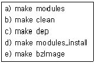
- a→b→c→d→e
- b→e→a→d→c
- e→d→c→b→a
- c→b→e→a→d
(정답률: 42%)
46. 다음 중 커널 모듈에 대한 설명으로 알맞은 것은?
- insmod 명령을 통해서 커널 데몬이 자동으로 모듈을 커널에 추가한다.
- 커널 데몬은 슈퍼 유저 권한을 가지고 있다.
- 로드된 모듈들은 rmmod에 의해 시스템에서 자동으로 제거된다.
- kerneld는 커널에 로드된 정보를 사용자에게 알려주는 것이 주된 역할이다.
(정답률: 30%)
47. 새로운 디스크가 예전 디스크와는 다르게 파티션 구조를 가지고 있는 경우 변경해 주어야 하는 파일은 무엇인가?
- /etc/fstab
- /etc/mtab
- /etc/lilo.conf
- /dev/hda1
(정답률: 53%)
48. 커널 패치가 성공했을 때 패치 대상이 된 파일의 원본 이름 끝에 붙는 것은?
- .rej
- .bak
- .org
- .orig
(정답률: 33%)
49. 모듈 기능을 이용해 커널에 포함되지 않는 기능을 필요할 때에만 동적으로 메모리에 적재하여 사용하는 것이 가능하게 된 커널의 버전은?
- 커널 버전 2.0 이후
- 커널 버전 1.2 이후
- 커널 버전 2.2 이후
- 커널 버전 1.0 이후
(정답률: 13%)
50. 다음 리눅스 커널 메카니즘에 대한 설명 중 틀린 것은?
- 리눅스는 단일 커널이다.
- 커널에 새로운 컴포넌트를 추가하기 위해서는 커널 설정을 바꾸고 컴파일 하면 된다.
- 로드된 리눅스 모듈은 다른 보통 커널 코드처럼 커널의 한 부분이 된다.
- 커널은 커널의 모든 자원의 목록을 커널의 오브젝트 목록으로 관리한다.
(정답률: 21%)
51. logrotate에서 수행할 수 있는 작업이 아닌 것은?
- 로그 파일을 순환 시킨다.
- 로그 파일을 압축해서 보관한다
- 로그 파일을 생성한다
- 작업시 에러가 발생했을 때 지정한 주소로 메일을 보낸다.
(정답률: 20%)
52. 일반적으로 로그 파일이 위치하는 디렉토리는 무엇인가?
- /etc/log
- /var/log
- /tmp/log
- /opt/log
(정답률: 66%)
53. 다음 중 아파치 액세스 로그에서 제공하는 정보와 설명이 옳지 않은 것은?
- Host : 방문자의 정보를 제공한다.
- Time Stamp : 접속한 시간을 제공한다.
- Status Code : 웹 서버의 상태를 제공한다.
- HTTP Request Field : 정보의 요청 방식과 파일이름 및 HTTP의 버전 등을 제공한다.
(정답률: 42%)
54. 다음 중 커널 2.4 이후로 사용되는 패킷 필터링 S/W의 이름은 무엇인가?
- iptables
- ipchain
- ipfilter
- ipcontrol
(정답률: 61%)
55. 다음 ssh에 대한 설명 중 옳지 않은 것은?
- ssh는 네트워크의 다른 컴퓨터에 로그인 하여 원격 시스템을 사용할 수 있도록 해 준다.
- ssh는 공개키/개인키 방식을 모두 지원한다.
- ssh는 모든 문자들을 암호화 하여 전송한다.
- ssh는 비 상업적인 경우에만 자유롭게 사용 할 수 있으며, ssh2는 공개 소프트웨어이다.
(정답률: 56%)
56. 다음 ( ) 안에 들어갈 내용으로 알맞은 것은?
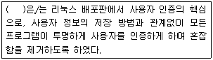
- OpenSSH
- PAM
- MD5
- kerberos
(정답률: 45%)
57. 다음 tripwire 설정 파일의 필수 구성 요소가 아닌 것은?
- POFILE
- DBFILE
- EDITOR
- SITEKEYFILE
(정답률: 36%)
58. 다음 중 COPS의 기능이 아닌 것은?
- 파일, 디렉토리 및 장치 파일에 대한 퍼미션 점검
- suid 파일 내용 점검
- 사용자 계정에 있는 모든 파일에 대한 점검
- 시스템의 파일, 디렉토리 소유권과 퍼미션 변화 점검
(정답률: 47%)
59. 다음 백업을 하기 위한 검토 사항에 대한 설명으로 틀린 것은?
- 자동 백업 : 사람의 개입 없이 정기적으로 자동적인 백업이 진행될 필요 여부
- 원격 백업 : 원격지에 있는 호스트의 백업을 진행하는 기능의 필요 여부
- 사용자 편의성 : 백업 중 시스템 사용자가 겪는 불편함은 어떤 것이 있는지 확인 여부
- 매체의 종류 : 백업 매체의 안정성, 저장 용량, 전송 속도 등의 요소를 비교 결정
(정답률: 37%)
60. 다음 ( ) 안에 들어갈 내용으로 알맞은 것은?
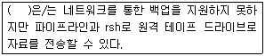
- cpio
- rdist
- taper
- dump
(정답률: 31%)
3과목: 네트워크 및 서비스의 활용
61. 다음 중 웹에 대한 설명으로 틀린 것은?
- 모자이크는 인터넷의 대중화 시대를 연 선두 주자로서 윈도우 3.1에서 실행되었다.
- 최초의 상업용 브라우저는 넷스케이프이다.
- 초기의 웹 서비스는 동적인 HTML페이지를 바탕으로 구현되었다.
- WWW는 현재 W3C 컨소시엄에서 주관하고 있다.
(정답률: 53%)
62. 다음 중 CGI에 대한 설명이 틀린 것은?
- CGI는 어떤 언어로도 코딩 될 수 있으며 프로토콜이 단순하여 사용하기가 쉽다.
- 여러 개의 CGI 스크립트를 계속해서 동작시키면 프로세서가 많이 생성되고 서버 내의 메모리자원 부족을 야기 시킨다.
- CGI 스크립트용 언어에는 C, C++, Perl, PHP, ASP등이 있다.
- 정적 HTML을 구현시키는 대표적인 스크립트 이다.
(정답률: 43%)
63. "웹 브라우저는 인터넷에 연결된 호스트로 접속하여, 문서를 가져와 사용자에게 보여주는 역할을 한다. 이때 사용되는 프로토콜은 ( )이며, 웹 브라우저를 ( ) 클라이언트, 호스트에서 문서를 전송하는 역할을 하는 것을 ( ) 서버라고 한다." 다음 ( ) 안에 공통적으로 들어갈 내용은 무엇 인가?
- FTP
- HTTP
- SMTP
- IRC
(정답률: 61%)
64. 다음 APM에 속하는 구성원 중에서 데이터베이스 연동 API를 지원하는 것은?
- Aparche
- PHP
- ASP
- MySQL
(정답률: 33%)
65. 설치되어 있는 아파치를 삭제하는 명령어로 알맞은 것은?
- rpm –e apache-1.3.19-5
- rpm –q apache-1.3.19-5
- rpm –i apache-1.3.19-5
- rpm –U apache-1.3.19-5
(정답률: 59%)
66. 다음 중 아파치 웹서버 설정에 대한 설명으로 틀린 것은?
- 서버루트 디렉토리의 기본경로는 ServerRoot “/usr/local/apache”에서 설정해준다.
- “MaxKeepAliveReqeusts 100” 설정은 지속적인 접속동안에 허용할 최대 요청횟수를 지정하는 것이다.
- “Timeout 300” 설정은 서버에 요청한 정보를 받을 때 소요되는 시간을 정해주는 것으로 단위는 밀리세컨드 이다.
- “KeepAlive On” 설정은 지속적인 접속, 즉 한번 연결에 대하여 한번이상의 요청을 허용할 것인가 여부를 결정하는 부분이다.
(정답률: 38%)
67. 다음은 아파치 접근로그(access_log)파일의 로그 포맷을 정의한 부분이다. 각 별명에 대한 설명 중 적절하지 않는 것은?
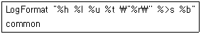
- %l : 원격 로그 이름
- %u : 요청의 첫번째 줄
- %t : 시간
- %b : 전송량
(정답률: 42%)
68. 다음은 무엇에 대한 설명인가?
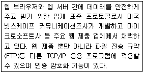
- SSL(Secure Sockets Layer)
- HTML
- HTTP
- Samba
(정답률: 59%)
69. 아파치 웹 서버의 설정 파일인 httpd.conf 파일에 대한 설명 중 틀린 것은?
- SSLEngine on : 서버의 루트 디렉토리의 기본 경로를 지정해 준다.
- SSLCertificateFile : 인증서의 위치와 그 이름을 아파치에게 알려 준다.
- SSLCertificateKeyFile : 비밀키 이름과 그 위치를 아파치에게 알려 준다.
- SSLCACertificateFile : Intermediate(root) 인증서의 위치를 아파치에게 알려 준다.
(정답률: 45%)
70. SMB 서버의 활용에 대한 설명으로 틀린 것은?
- 삼바 서버가 지원하는 플랫폼은 크게 서버와 클라이언트로 나눌 수 있는데 서버환경은 대다수의 유닉스 기종들을 지원한다.
- 삼바를 이용하면 리눅스 서버에서 사용하는 디스크를 윈도우즈와 같은 다른 운영체제에서도 사용할 수 있다.
- 삼바기능은 리눅스나 윈도우즈 시스템에 자료를 업로드하거나 다운로드할 때 FTP를 사용하지 않고 쉽게 사용할 수 있으며 백업 시스템으로도 활용할 수 있다.
- 리눅스서버에 연결되어 있는 프린터, CD-ROM을 윈도우즈에서도 공유하여 사용하기는 어려우며 별도의 윈도우즈 서버를 이용하면 윈도우즈와 같이 클라이언트를 관리할 수 있다.
(정답률: 61%)
71. 다음 ( ) 안에 들어갈 내용으로 알맞은 것은?
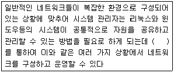
- FTP
- NFS
- SMB
- DNS
(정답률: 47%)
72. 삼바서버의 보안 모델에서 공유(share)를 기준으로 볼 때 다음 설명 중 알맞지 않은 것은?
- 사용자 레벨은 공유 레벨과는 달리 한번 접속에 성공하면 그 이후에는 암호를 체크하지 않으므로 성능 면에서 유리하다.
- 공유 레벨은 프린터, CD-ROM, anonymous FTP 등의 공유 디렉토리를 불특정 사용자들이 공유할 경우에 유용하다.
- 서버 레벨은 사용자로부터 계정과 암호를 받아 다른 NT와 같은 SMB 서버로 인증을 맡기는 방법을 사용한다.
- 도메인 레벨은 삼바의 기본설정으로 기존 윈도우 95를 대신하여 급속히 윈도우 98과 NT가 보급되어 기본설정이 변경된 것이다.
(정답률: 40%)
73. NFS 서버의 익스포팅 설정 파일인 /etc/exports 파일에서 사용가능한 옵션에 대한 설명으로 틀린 것은?
- root_squash : 클라이언트에서 루트를 서버상에 nobody사용자로 매핑
- no_root_squash : 서버와 클라이언트가 루트 계정을 사용안함
- ro : 공유된 자원을 읽기 전용으로 마운트
- insecure : 인증되지 않은 액세스도 가능하도록 함
(정답률: 46%)
74. NFS에서 제공하는 유틸리티와 그에 대한 설명이 틀린 것은?
- showmount : mount 데몬에, NFS 서버에 대해서 질의하여 사용 중인 상태를 표시한다.
- nfsstat : NFS 서버와 클라이언트의 동작 상태를 보여주는 유틸리티이다.
- nhfsstone : NFS를 벤치마킹하기 위한 프로그램인데 시간당 부하의 수, 전송률, 실패율 등의 NFS에 관련된 데이터를 제공한다.
- nfscps : NFS 서버와 클라이언트의 접속 수를 보여준다.
(정답률: 28%)
75. NFS 마운트할 때 사용되는 옵션과 그에 대한 설명이 틀린 것은?
- rsize : NFS 서버로부터 읽어 들이는 바이트 수를 지정하며 기본은 1024byte
- timeo : 클라이언트에서 타임아웃이 발생되고 나서 다시 재전송 요구를 보낼 때 사용하는 시간
- fg : 타임아웃이 발생하면 곧바로 foreground로 전환
- soft : 클라이언트에서 타임아웃이 발생되고 나서 다시 재전송 요구
(정답률: 28%)
76. 인터넷의 TCP/IP 응용 프로토콜 중의 하나로 인터넷 상의 컴퓨터들 간에 파일을 교환하기 위한 표준 프로토콜은 무엇인가?
- FTP
- NFS
- DNS
- ProFTP
(정답률: 49%)
77. 리눅스에서 제공하는 대표적인 FTP 서버 프로그램에 포함되지 않는 것은?
- ProFTPD
- wuFTPD
- gFTP
- vsFTPD
(정답률: 36%)
78. ProFTPD 서버 설치를 하기 위한 환경파일 설정에 대한 설명이 잘못된 것은?
- ServerName “ihd server” : ServerName은 ProFTPD가 현재 설치되어 있는 컴퓨터의 서버 이름을 “ihd server”로 설정한다.
- ServerType standalone : ProFTPD을 실행 시키는 방법으로 ServerType을 standalone으로 설정한다.
- MaxInstances 30 : MaxInstances는 ProFTPD 서버가 standalone 모드일 때 최대 접속 가능한 사용자 수를 지정한다.
- RequireValidShell off : RequireValidShell은 /etc/shells파일에 정의되지 않는 쉘을 사용하는 사용자에게 FTP 접속을 허락하거나 거절하는 것에 대한 지정이다.
(정답률: 11%)
79. 메일 서비스를 하기 위한 기본적인 3가지 컴포넌트에 대한 설명이 잘못된 것은?
- MUA(Mail User Agent)는 사용자들이 메일을 보기 위해 사용하는 프로그램이다.
- MTA(Mail Transfer Agent)는 한 호스트로부터 메일을 받아 다른 호스트로 메일을 전달하는 역할을 한다.
- MMA(Mail Messenger Agent)는 메일의 도착지가 자신인지 확인한 후 자신이 아니면 도착지로 메시지를 다시 전송한다.
- MDA(Mail Delivery Agent)는 수신된 메시지를 해당 사용자의 메일 박스에 저장해 주는 역할을 한다.
(정답률: 42%)
80. 일반적인(Well Known) 포트번호와 프로토콜의 연결이 잘못 짝지어진 것은?
- 21, 23 : FTP, Telnet
- 143, 445 : INAP, SMB
- 25, 110 : SMTP, POP3
- 53, 80 : DNS, HTTP
(정답률: 58%)
81. 다음은 무엇에 대한 설명인가?
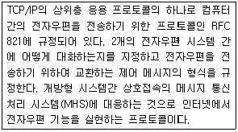
- IRC
- Messenger
- SMTP
- POP3
(정답률: 59%)
82. 슈퍼 데몬(xinetd)이 보안과 성능을 위해서 제공하는 여러 가지 옵션에 대한 설명 중 틀린 것은?
- wait : 스레드에 대한 서비스 동작을 정의한다.
- cps : 초당 문자 전송률을 제한한다.
- per_source : 동일 호스트로부터의 서버 접속 수를 설정한다.
- server : 서버 프로그램의 경로이다.
(정답률: 29%)
83. 다음 중 메일 서버 프로그램이 아닌 것은?
- Sendmail
- Kmail
- Sendmail Pro
- Qmail
(정답률: 27%)
84. 다음에서 설명하고 있는 전자우편 도구는 무엇인가?
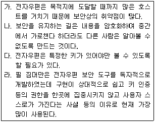
- PGP(Pretty Good Privacy)
- PEM(Privacy Enhanced Mail)
- BIND(Berkeley Internet Name Domain)
- IETF(Internet Engineering Task Force)
(정답률: 49%)
85. Sendmail 환경설정 파일인 Sendmail.cf 파일의 작성규칙에 대한 설명 중 틀린 것은?
- Sendmail 파일에서 새로운 줄의 시작은 탭 문자로 시작한다.
- Sendmail 파일의 모든 라인은 config 명령이거나 주석문자(#)로 시작해야 한다.
- Sendmail 파일은 줄 단위로 실행한다.
- Sendmail 파일의 모든 라인에는 반드시 하나의 명령이 존재한다.
(정답률: 18%)
86. Sendmail.cf 파일의 7개 섹션 중 메일 작성시 헤더를 생성하는 규칙이 정의되어 있는 섹션은 어느 것인가?
- Local Info Section
- Trusted Users Section
- Rewriting Rules Section
- Format of Headers Section
(정답률: 53%)
87. 다음은 무엇에 대한 설명인가?
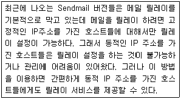
- IMAP
- DRAC
- MDA
- MLM
(정답률: 44%)
88. 서버, 즉 데몬의 2가지 실행모드(유형)에 대한 설명이 잘못된 것은?
- Standalone모드로 실행되는 데몬은 클라이언트의 요청에 즉각 응답을 한다.
- 클라이언트의 요청이 빈번하지 않은 텔넷과 같은 데몬은 Inetd모드로 관리하는 것이 일반적인 상식이다.
- Standalone모드로 실행되는 데몬은 시스템을 부팅하면서 바로 실행할 수 있도록 /etc/rc.d/init.d 디렉토리에 스크립트 파일로 제어된다.
- Inetd모드로 실행되는 데몬들은 다른 데몬들과 함께 /etc/hosts.d 아래의 서비스별 설정파일에 설정한다.
(정답률: 24%)
89. xinetd에서 관리하는 telnet 서비스 설정의 일부이다. 다음 설명 중 틀린 것은?
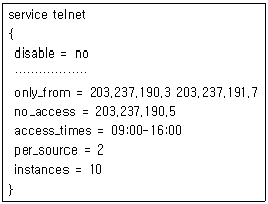
- 호스트 203.237.190.3은 주어진 시간 동안 텔넷을 이용할 수 있다.
- 텔넷 서비스를 이용할 수 있는 최대 연결 수는 10이다.
- 한 호스트당 접속할 수 있는 연결 수는 2이다.
- 호스트 203.237.190.5는 09:00∼16:00 이외의 시간 동안 텔넷을 이용할 수 있다.
(정답률: 53%)
90. 슈퍼 데몬 중 xinetd의 속성이 아닌 것은?
- client
- log_type
- flags
- nice
(정답률: 29%)
91. DNS 서버를 테스트하기 위하여 명령을 입력한 결과 다음과 같은 결과를 볼 수 있었다. 다음 중 DNS서버를 확인할 수 있는 명령으로 알맞은 것은?
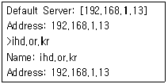
- nslookup
- ipconfig
- domainname
- hostname
(정답률: 48%)
92. 프록시 서버인 squid의 환경설정 파일인 squid.conf의 일부이다. 다음 중 디스크에 생성되는 프록시 서버의 크기는 얼마인가?
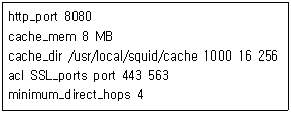
- 8MB
- 1GB
- 4MB
- 256MB
(정답률: 31%)
93. NIS 서버 설정에 사용되는 클라이언트 프로그램이 아닌 것은?
- ypbind
- ypswitch
- ypcat
- yppull
(정답률: 49%)
94. 다음 중 DHCP 서버에 대한 설명으로 틀린 것은?
- DHCP는 동적으로 IP를 할당해 주고 할당을 받는 것을 말한다.
- DHCP는 각각의 호스트에 중요한 네트워크 매개 변수 및 설정 사항들을, 서버의 세팅을 사용하여 원격으로 설정해 주는 프로그램이다.
- IP 주소와 게이트웨이는 클라이언트에게 할당할 수 있으나 네임서버는 할당할 수 없다.
- DHCP는 Dynamic Host Configuration Protocol의 약자이다.
(정답률: 48%)
95. MAC 주소를 이용하여 서버나 호스트의 위치를 찾기 위한 arp(address resolution protocol)의 옵션에 대한 설명으로 틀린 것은?
- arp –a : 캐시에 있는 특정된 호스트 또는 모든 호스트를 나열한다.
- arp –s : 현재 캐시에 있는 특정한 호스트에 대한 MAC 주소의 값을 생성 또는 변경한다.
- arp –d : 현재 캐시에 있는 특정한 호스트에 대한 MAC 주소의 값을 지운다.
- arp –v : 정적인 모드로 보여준다.
(정답률: 32%)
96. 다음 중 DoS(Denial of Service) 공격의 특징이 아닌 것은?
- 루트 권한을 획득하는 공격이 아니다
- 데이터를 파괴, 변조 또는 훔쳐가는 것을 목적으로 하는 공격이 아니다.
- 같은 공격에 대하여 공격당한 시스템에 피해 결과는 똑같이 일어난다.
- 데이터의 삭제나 파일시스템의 파괴와 같은 시스템에 치명적인 문제를 끼치지는 못하지만, 시스템의 네트워크나 시스템 서비스 등의 정상적인 수행 문제를 야기시켜 사용자에게 불편을 준다.
(정답률: 54%)
97. DoS 공격은 크게 외부에서의 공격과 내부에서의 공격으로 나눌 수 있다. 다음 중 외부에서의 공격에 해당하지 않은 것은?
- 응용프로그램의 정상적 동작을 하지 못하게 한다.
- TCP/IP, 이더넷 층에서 돌아다니는 패킷 조정을 통하여 목표 시스템의 네트워크 기능을 마비시킨다.
- 네트워크의 트래픽을 증가시켜 시스템이 네트워크 서비스를 수행하지 못하게 한다.
- 시스템의 프로세스 테이블을 모두 고갈(Full) 시킨다.
(정답률: 27%)
98. 트로이 목마에 대한 설명과 그 대응책이 잘못된 것은?
- 정상적인 기능을 하는 프로그램으로 가장하여 프로그램 내에 숨어서 의도하지 않은 기능을 수행하는 프로그램이다.
- 사용자의 합법적인 권한을 사용하여 시스템의 방어체제를 침해하고 공격자는 접근이 허락되지 않는 정보를 획득한다.
- 트로이 목마는 자기 존재의 흔적을 남기지 않아 발견 가능성이 적고, 의심받지 않는 소프트웨어에 숨어있다.
- 백 오리피스(Back Orifice) 같은 프로그램은 트로이 목마와 유형이 다르다.
(정답률: 55%)
99. 웜(Worm) 바이러스에 대한 설명이 아닌 것은?
- 자기 자신을 컴퓨터 시스템에 해를 끼칠 수 있는 장소에 위치하는 바이러스나 복제 코드의 일종이다.
- 전자우편을 통해 많은 컴퓨터들에게 자기자신을 복제하는 멜리사와 같은 바이러스도 있다.
- DoS공격의 일반적 유형을 보이는 바이러스다.
- 대부분의 컴퓨터 바이러스와 같이 웜도 대체로 트로이 목마 내에 삽입된 상태로 침투한다.
(정답률: 37%)
100. VPN(Virtual Private Network)은 인터넷과 같은 공중망을 이용하여 전용선의 효과를 줄 수 있는 기술로 구현 기술에는 터널링(Tunneling) 기술을 들 수 있다. 다음 중 현재 가장 널리 사용되는 터널링 프로토콜이 아닌 것은?
- PPTP(Point-to-Point Tunneling Protocol)
- L2TP(Layer 2 Tunneling Protocol)
- IPsec(IP Security Protocol)
- NAT(Network Address Translation)
(정답률: 40%)